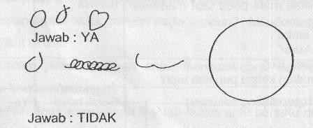

Kuesioner Praskrining untuk Anak 42 bulan
- Dapatkah anak mengenakan sepatunya sendiri?
- Dapatkah anak mengayuh sepeda rods tiga sejauh sedikitnya 3 meter?
- Setelah makan, apakah anak mencuci clan mengeringkan tangannya dengan balk sehingga anda ticlak perlu mengulanginya?
- Suruh anak berdiri satu kaki tanpa berpegangan. Jika perlu tunjukkan caranya clan beri anak anda kesempatan melakukannya 3 kali. Dapatkah ia mempertahankan keseimbangan dalam waktu 2 detik atau lebih?
- Letakkan selembar kertas seukuran buku ini di lantai. Apakah anak dapat melompati panjang kertas ini dengan mengangkat kedua kakinya secara bersamaan tanpa didahului lari?
- Jangan membantu anak clan jangan menyebut lingkaran. Suruh anak menggambar seperti contoh ini di kertas kosong yang tersedia. Dapatkah anak menggambar lingkaran?

- Dapatkah anak meletakkan 8 buah kubus satu persatu di atas yang lain tanpa menjatuhkan kubus tersebut? Kubus yang digunakan ukuran 2.5 – 5 cm.
- Apakah anak dapat bermain petak umpet, ular naga atau permainan lain dimana ia ikut bermain clan mengikuti aturan bermain?
- Dapatkah anak mengenakan celana panjang, kemeja, baju atau kaos kaki tanpa di bantu? (Tidak termasuk kemandirian memasang kancing, gesper atau ikat pinggang)